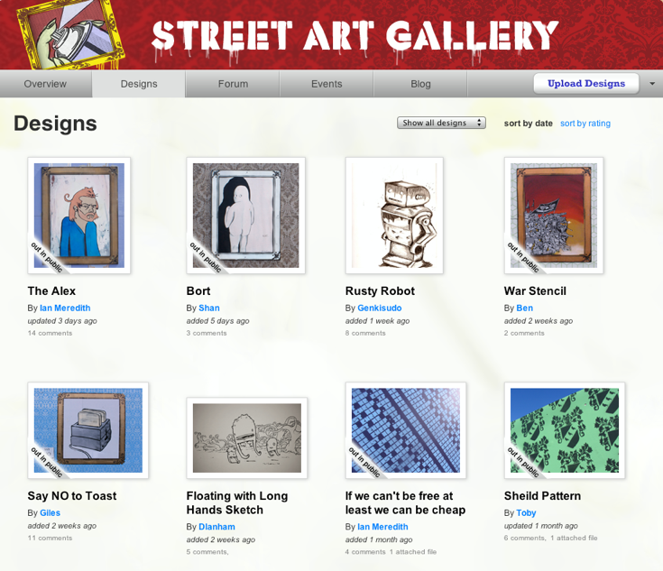

Background
For my Master’s degree I explored how to involve the public in creating street art. My final project was a website to help people organise collaborative art projects.
Strategy
To be successful, the platform would needed to motivate people to get involved. Initial concepts focused on the free sharing of artistic posters and stencils. Feedback showed people were not motivated by this. They wanted real locations for their artwork with a clear creative goal. This moved the focus towards site specific creative challenges. For example: 'Make an animal stencil to put on the zoo wall'.
Informative Case Study
To better understand this area I organised a collaborative art project myself. I found a supportive landowner with a large blank wall, then asked what people wanted to do with the wall. After brainstorming and voting, we decided to turn it into an art gallery on the street.

The project attracted over 40 volunteers. People donated both time and equipment, helping to paint the wall and add their own artwork. This validated the core concept. People were eager to leave their mark on the city given the right support.

This case study highlighted what an online platform would need to support. An organiser needs the ability to promote an art project to the public and seek contributors, while contributors submit ideas and discuss the project.
Hypothetical Projects
The case study I ran was useful for getting a deep understanding of one specific project. But it was only one project. I talked with other potential organisers to get a better idea of their needs. Some organisers wanted to have ongoing competitions; for example, a single ‘winner’ displaying art on a billboard each month. While other organisers wanted many people to bring together their artistic efforts; for example, a wall full of stencils done by different artists. To design with these examples in mind I generated some hypothetical projects.
Generic Process
Information Architecture
The final structure puts a strong emphasis on ‘projects’. Creative challenges form the foundation of the platform, providing people with a clear focus. Within each project the organiser can define the challenge, request submissions, and have discussions around the project.
Interface Design
To test how easy my wireframes were to navigate, I created quick interactive prototypes. This process helped to address issues that were not immediately obvious on paper. One example of this was the process of rating designs. Getting users to rate designs is important as it makes finding the best designs much easier. Yet my early mockups made browsing and rating many designs tedious. Users had to navigate back to a list of designs every time they wanted to view a different design. To encourage users to view and rate designs I added previous and next buttons. Placing the rating box nearby allows people to browse and rate without much effort.
Wherever possible the language on buttons invites contribution. I've used adjectives such as ‘upload a design’ and 'start a new topic'.
Visual Styling
The visual style uses paper and pencil to reflect the creative nature of the platform.
To give projects a unique feel they each have a customisable header. This makes it easy to distinguish and customise projects.
Final Prototype
I presented a final prototype at the end of my masters degree. It demonstrated the design to people in an interactive way. People can navigate and perform simple tasks. This brought the concept to life and allowed more detailed feedback on the design.
Download my thesis for more information or get in touch.